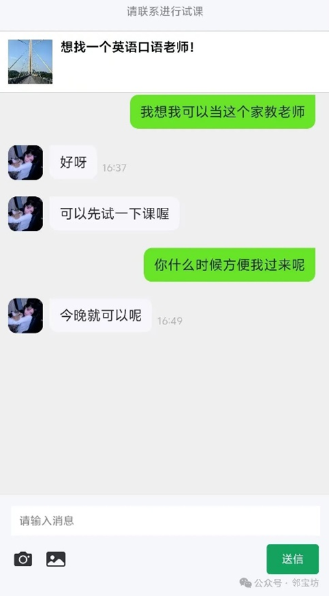

注册流程：用户进入邻宝坊小程序后，需要先进行登录才能浏览帖子。若用户尚未登录，系统将提示“用户未登录”，登录后会自动定位用户位置并在主页显示其周围的帖子。
您可以在地图中选择主页推送帖子的距离范围
如果您想要进行发布和购买，则需要进行实名认证
在邻宝坊上，您可以进行物品与信息的交换。本页面将为您介绍在 邻宝坊上发布帖子的方法以及物品上架后的相关流程。
卖家流程
上架物品→咨询→聊天交流→货物交付→评价→交易结束
怎样发布商品？
在“发布”按钮中，按照要求填写所需信息并发布您的物品。
步骤 1：选择类别
按下【发布】按钮，然后选择您要发布的商品分类。
步骤 2：填写商品信息
• 商品图片
o 为您的商品拍摄照片并上传，最好上传3张及以上图片。
• 类别
o 选择合适的商品分类。
• 标题
o 填写您的商品名称及引人注目的商品特色。
• 内容
o 输入有关产品的更多信息，请用易懂的语言描述出商品特色及重点。
• 地点
o 填写商品交易地点
步骤 3：发布
填写必填项后，点击发布按钮即可立即发布。
※请注意
• 根据您输入的内容，有时可能需要较长的审核时间才能发布。
小tips：
• 若要修改您的帖子，可以选择编辑然后重新编辑您的帖子。
• 您可以选择“市级特权”让您的帖子更加亮眼。
• 你可以在发布帖子时将价格设置为0元，帖子显示在0元类目
找到心仪商品后，点击购买按钮，选择支付方式并完成支付。
步骤 1：咨询
你会收到对帖子感兴趣者的询问。
步骤 2：聊天交流
你们将将对交易条件进行商讨、确认，然后你需要将对方确定买家
如果您收到多人的询价，那么请从符合价格与交货计划条件的人中选择你的买家
您将不能设置多个人成为您的买家
确认对方为买家后，如受到某种因素的干扰导致交易无法继续进行吗，您可以点击“交易取消“按钮来中止交易

步骤 3：货物交付
你会在约定好的地点与买家碰面并交接货物。
步骤 4：评价
买家点击确认收货，交易完成后，您或许会收到来自他的评价
通过在当地进行商品的交易，您可以更快的收到您心仪的商品。
我们将为您说明如何在邻宝坊上找到您心仪的物品以及购买时的操作方法。
购买流程
找到想买的东西→咨询（购买）→通过聊天进行交流→收货→评价→完成
第 1 步：找到想买的东西
首先，选择您要交易的区域。
选择您当前的位置并设置距离。
您可以在主页看到您附近发布的帖子。
如果您有想要的东西，请从搜索框中搜索它。
在搜索中，您可以通过指定条件选择类别进行详细搜索。
第 2 步：询问（购买）
当您找到想要的东西时，请咨询帖主来传达您的购买意向。
但是仅通过询问并不能确认购买，还需等待卖家的回复。
第 3 步：通过聊天进行交流
收到对方的回复后，请在聊天中确定好你们如何交付商品
卖家将会把您设置成这件物品的买家，请商议好你们交接货物的见面地点和日期。
第 4 步：收货
在你们约定好的地点和时间见面，交接货物并且付款。
第 5 步：评价对方
如果您选择“确认收货”，就可以够评价与您进行交易的人。
1. 闲置功能
闲置功能区域旨在为用户提供一个便捷的平台，用于上架和销售个人闲置物品。用户可将长期未使用的物品，如书籍、电子设备等，通过邻宝坊进行交易，实现资源的有效利用，减少浪费。
操作步骤
1. 发布闲置物品：用户在闲置功能区域内创建帖子，上传闲置物品的相关信息和图片。
2. 浏览与询问：其他用户浏览发布的闲置物品，并可通过平台内的消息系统进行咨询。
3. 确定交易：双方协商确定交易细节，包括交易地点和时间。
4. 线下交易：用户在约定地点进行当面验货和交易，确保物品状态符合描述。
2. 社交功能
社交功能专注于校园社交需求，帮助用户快速找到志同道合的伙伴，涵盖学习讨论、运动健身及参与校园活动等多个方面，增强用户间的互动与交流。
热门帖子：
• 学习心得交流：用户可在社交板块发布和交流学习心得，寻找学习搭子，解决学习中的问题。

• 找搭子：用户可以发布寻找搭子的需求信息，平台通过匹配机制帮助用户找到合适的学习或活动伙伴。
3. 领养功能
领养功能为用户提供一个平台，用于发布和浏览待领养的小动物信息。用户可通过详细的动物资料和照片，了解动物的基本信息，并进行咨询确认后完成领养，帮助小动物找到温暖的新家。
热门帖子：
• 领养信息发布：用户上传待领养动物的详细资料，包括年龄、品种、性别、健康状况及疫苗接种记录，方便潜在领养者了解和选择。
• 领养教程：提供宠物寄养需求发布流程，用户可寻找可靠的邻里帮助照顾宠物，确保宠物得到妥善照料。
• 交流心得：用户可分享养宠心得、领养故事和日常经验，促进社区间的互助与支持。
4. 兴趣功能
兴趣功能为用户提供展示专业技能和个人才华的平台，帮助用户寻找志同道合的伙伴。无论是学科辅导还是兴趣培养，用户都可以在平台上找到合适的资源和伙伴，促进个人兴趣的发展。
操作步骤：
1. 发布兴趣需求：用户根据自身兴趣爱好，发布寻找兴趣相同的用户信息。
2. 浏览与匹配：其他用户浏览发布的兴趣信息，并进行交流和匹配。
3. 参与活动：成功匹配后，用户可共同参与相关兴趣活动或项目，提升兴趣体验。
热门帖子：
• 无论是寻找学科辅导还是兴趣培养，用户在平台上都可以找到合适的资源
5. 互助功能
互助功能通过发布兼职信息，快速满足用户的兼职需求。同时，支持快递外卖等代拿服务，使互助更加深入到用户的日常生活，提升校园生活的便利性。
热门帖子：
• 兼职信息发布：用户可以发布兼职工作信息，供有需求的用户查看和申请。

• 寻找机会，轻松咨询：用户可以浏览兼职信息，并直接与雇主沟通，寻找合适的工作机会。
• 寻找家教老师：用户发布寻找家教老师的需求，平台帮助匹配可靠的家教资源。

• 快递外卖代拿：用户发布可以帮忙代拿的帖子，如有需求的用户可以进行相关咨询

定期刷新
您可以每24小时在顶部更新发布日期，并定期刷新,持续一周的时间。这样在最新一栏可以增加帖子的曝光量。
刷新
您可以指定您的一个帖子在24小时内更新发布日期，持续一天的时间。
置顶
该帖子将出现在最新一栏的顶部，持续7天的时间，在此期间同类目的帖子无法同时置顶。
高亮
将贴子在主页的颜色显示变得更加的引人注目，增加曝光度，持续3天时间。
轻松 3 步购买
第一步：我的-->我的积分中充值购买积分
第二步：我的-->市级特权中使用积分选择特权购买
第三步：选择相应的特权对帖子进行使用
首页地图，根据用户所填写的具体地址以及所选的方圆公里数，显示此范围内的闲置品，让用户更加快捷的找到周围物品。与搜索功能相关联。仅能搜到距离范围内的闲置品，使用户查找更精确。
点击自动定位标志即可获取当前位置
用户可以通过我的界面找到意见反馈功能，点击此功能，可跳转至小程序后台联系客服，描述您遇到的问题，提交截屏或者所举报的用户id，即可完成举报。
交易完成后，您可以在聊天界面对您刚刚购买的物品做出您的评价，您的评价内容将会在消息-->评价中显示
您可以在其他用户的个人主页中查看他的交易星级及他收到的评价内容，未收到过评价的用户星级默认三星
我的帖子：其他用户对您的帖子的咨询会显示在此处
咨询：您对其他用户咨询的帖子会显示在此处
评价：显示您发出的评价
您可以截图进行举报。若均已得到客服的确认，我们将对该用户采取一定的行动
在邻宝坊，我们在当地见面并交付产品，但如果您当天无法联系到该人，您可能无法在当地与他们见面。遇到这种情况，在前往该地点之前，先联系对方确认一下，比如“今天可以交易吗？”
如果仍然没有回复，请取消交易并截图告知我们。
在邻宝坊，对方的评价是任意的。如果您确实希望有人给您评分，请尝试用这样的消息提示他们：“如果您愿意，可以给我一个评价吗，谢谢。”
邻宝坊不提供线上邮寄交易，线下交易拿到货品后可即可检查，及时向买家提供相应的需求
您需要先进行登录，如果已经登陆，可能是因为您在地图中定的距离范围太小，也可能是定位错误，还可能是您周边还没有发布的帖子哦~等待您的探索。
请点击我的-->意见反馈，进入客服界面，回复IOS系统充值，我们将提供您的充值入口。
作为卖家，您可以选择您的物品的买家，如若设置某人成为了您的买家，您将不能够再与其他的买家进行此物品的交易。
当然，您可以点击交易取消按钮重新选择您的买家，不过，不能随便进行无理由的中止交易哦。
您需要点进铃铛进入消息提示界面点进具体的聊天界面消除红点